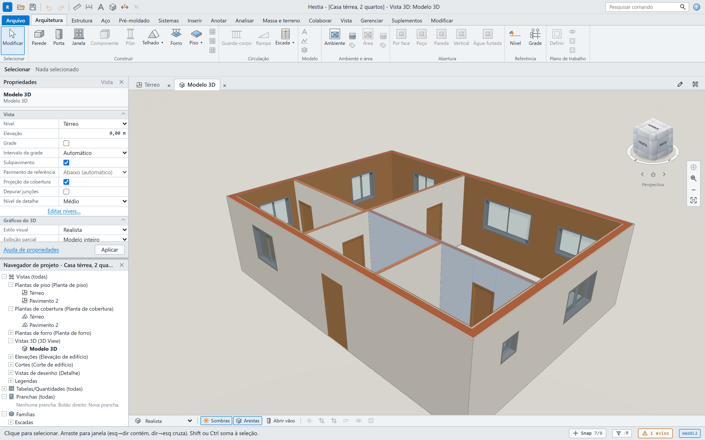
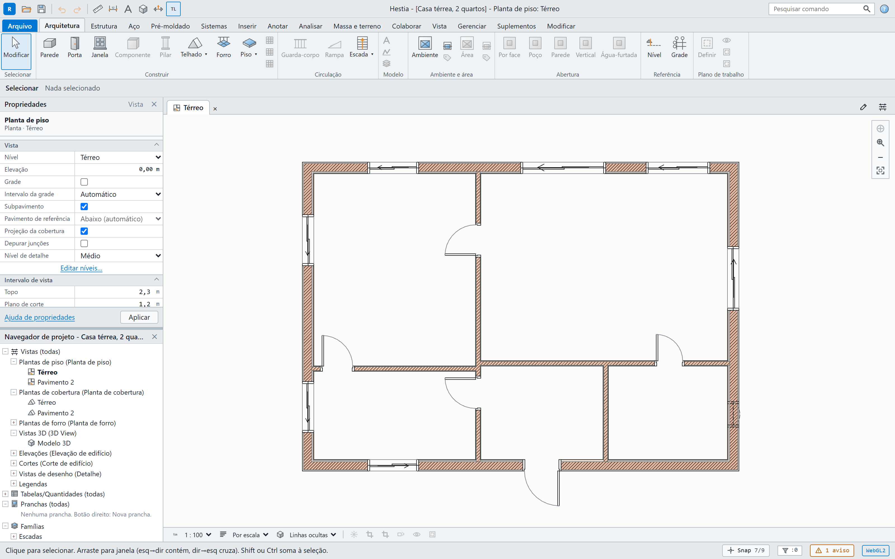
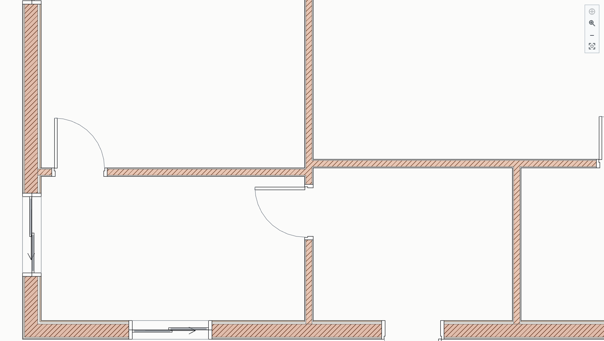
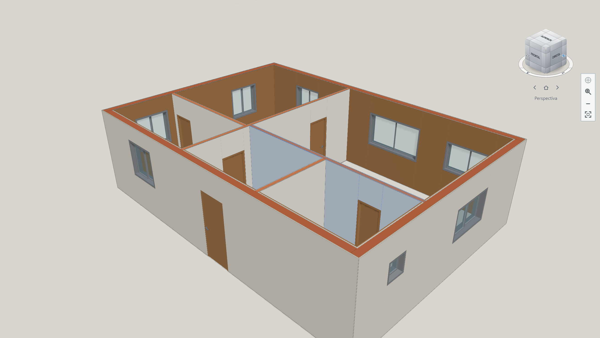

01
Paredes
Retas, em arco e por retângulo. Camadas com função, material, espessura e prioridade; junções L/T/X resolvidas pela prioridade.
camadas · membranas · perfil superior
BIM open source · direto no navegador
O Hestia é um BIM open source que roda no navegador. Paredes, aberturas, pisos, lajes, telhados, escadas, rampas, ambientes e forros vivem no mesmo modelo — e a planta, o corte, o 3D e a prancha saem todos dele. Importe IFC ou DXF e comece de um modelo existente.
Grátis e open source · sem instalação · seus arquivos ficam no seu computador

01 Um modelo, todas as vistas
Planta, corte, elevação, 3D e prancha não são arquivos separados. São vistas do mesmo modelo. Você muda a parede na planta e o corte, o 3D e os quantitativos acompanham — sem redesenhar nada.
Intervalo de vista, subpavimento, projeção da cobertura e linhas finas na tela.
Gerados do modelo, com linha oculta, marcas de corte e referência de parede.
Ocultar na vista com desfazer, isolar temporariamente e revelar os ocultos em azul. Menu de contexto, barra da vista e atalhos configuráveis.
Sombras, sol, estilos, abrir vãos, ViewCube de 26 zonas e pontos de vista salvos. Os níveis são preparados em segundo plano, e a primeira abertura pode montar tudo de uma vez.
Margem, carimbo, escala e pesos de linha reais. PDF vetorial, uma página por prancha; a vista 3D também sai em traços, não em imagem.
Importe IFC4/IFC2X3 ou DXF. O IFC vira um projeto editável com relatório do que entrou; o DXF serve de referência e captura.


02 Os elementos
Não é um desenho 3D com paredes de papel. Cada elemento carrega tipo, camadas, materiais, junções e quantitativos — e se comporta como num projeto de verdade.
Retas, em arco e por retângulo. Camadas com função, material, espessura e prioridade; junções L/T/X resolvidas pela prioridade.
camadas · membranas · perfil superior
Dez famílias e catálogo brasileiro de portas e janelas, hospedadas na parede, com recorte real em todas as camadas e tabela com CSV.
giro · correr · pivotante · maxim-ar
Contorno associativo às paredes, furos, inclinação e término de cada camada contra a parede. Quantitativos líquidos por camada.
associativo · furos · caimento
Uma, duas e quatro águas, contorno livre ou extrusão de perfil. Cumeeira, espigões, rincões, beiral e topo de parede ajustado.
águas · beiral · planta de cobertura
Croqui de lance com patamar, geradores reto, L, U, leque, caracol e livre. Furo derivado na laje e aviso de folga de cabeça.
patamar · caracol · livre
Rampas retas, L, U e livres, com tipo, norma editável, níveis e desnível; representação em planta, corte, 3D e DXF.
reta · L/U · livre · norma
Contorno derivado do circuito fechado de paredes. Área líquida, perímetro e volume, com tabela filtrável e CSV. Plantas de área por pavimento, com quadro de áreas e legenda.
circuito fechado · quadro de áreas · plantas de área
Por contorno, retângulo ou no ambiente inteiro. Tipos em camadas — gesso, PVC, laje aparente — com planta de forro.
gesso · PVC · laje aparente
Cotas automáticas por critérios, textos, marcas de corte e elevação, grades e eixos. Tudo em milímetros de papel, na tela e no DXF.
cotas · textos · grades
Prancha A0–A4 com margem e carimbo; vistas em escala; vista 3D vetorial sem escala; PDF 1.4 vetorial, uma página por prancha. Também DXF e IFC4.
A0–A4 · carimbo · 3D vetorial
03 O fluxo
Desenhe as paredes com camadas ou importe um IFC/DXF de referência. As junções L, T e X se resolvem sozinhas, com encosto, esquadria e cortes oblíquos.
Hospede portas e janelas na parede. O vão é recortado em todas as camadas e a tabela se atualiza.
Pisos, lajes, forros, telhados, escadas, rampas e grades. A parede reconhece o piso, a laje e a cobertura.
Cotas, textos, ocultar/revelar por vista, pranchas com 3D vetorial, PDF, DXF, IFC e quantitativos — tudo derivado do mesmo modelo.
04 Sem render
Capturas do app rodando, com o modelo aberto. Sem maquete comprada, sem pós-produção.

05 Open source
O Hestia é open source e o app é gratuito. Você usa, lê o código, roda onde quiser — e leva seus projetos com você. Sem assinatura, sem limite de projetos e sem recurso bloqueado.
O app é gratuito: sem mensalidade, sem licença por usuário e sem limite de projetos.
O código está no GitHub para ler, estudar, rodar e adaptar ao seu jeito.
O projeto fica num arquivo no seu computador. Nada preso numa conta.
Abre numa aba do navegador. Sem depender de uma máquina ou licença específica.
Grátis.
Sempre.
06 Sem promessa vazia
O Hestia está em desenvolvimento ativo. Em vez de prometer tudo, preferimos mostrar o que existe hoje — e o que vem depois.
A versão atual cobre paredes, aberturas, pisos, lajes, telhados, escadas, rampas, ambientes, forros, grades, anotações, pranchas e CAD de referência, com plantas por nível, de área e de cobertura, cortes, elevações, 3D, ocultar/revelar por vista e importação IFC/DXF. O roteiro completo está nos documentos do projeto.
Baixar
O instalador se atualiza sozinho: ao abrir o Hestia, ele avisa quando há uma versão nova e instala sem você baixar nada de novo.
Última versão
Publicada no GitHub Releases
07 Comece agora
Abra o Hestia, desenhe o perímetro e veja o 3D aparecer enquanto você trabalha. Leva menos tempo do que instalar um CAD.
Grátis e open source · sem cadastro · seus arquivos ficam no seu navegador
08 Perguntas
Não. O Hestia roda no navegador. Chrome, Edge ou Firefox recentes funcionam; quanto melhor a GPU, mais fluido o 3D. Não há instalador, licença de máquina nem dependência de sistema.
Sim. O modelo guarda tipos e instâncias, camadas, materiais e relações entre elementos. Planta, corte, 3D, quantitativos e pranchas são derivados dele — não desenhos paralelos.
Não. O Hestia é um BIM geral: os mesmos elementos servem para reformas, interiores, ampliações, edifícios e outros projetos. O limite é o conjunto de elementos disponíveis, não o tipo de obra.
Você pode exportar IFC4 e DXF, importar IFC4/IFC2X3 e usar DXF como referência. A importação IFC mapeia paredes, aberturas, lajes, forros, ambientes e grades; telhados, escadas e rampas podem entrar como geometria genérica conforme o arquivo. A exportação cobre paredes, portas, janelas, aberturas, lajes, telhados, escadas e camadas de material.
No seu computador: o projeto é um arquivo .hestia.json e o Hestia também guarda
um autosave no navegador. Quer começar de um exemplo?
Baixe este projeto de exemplo
e abra em Arquivo → Abrir.
A visualização abre em telas pequenas, mas a edição foi desenhada para mouse e teclado. Para projetar, use um computador.
Nada. O app é grátis, open source (MIT) e sem limite de projetos. Não há assinatura nem cobrança para usar o Hestia. A licença é MIT.